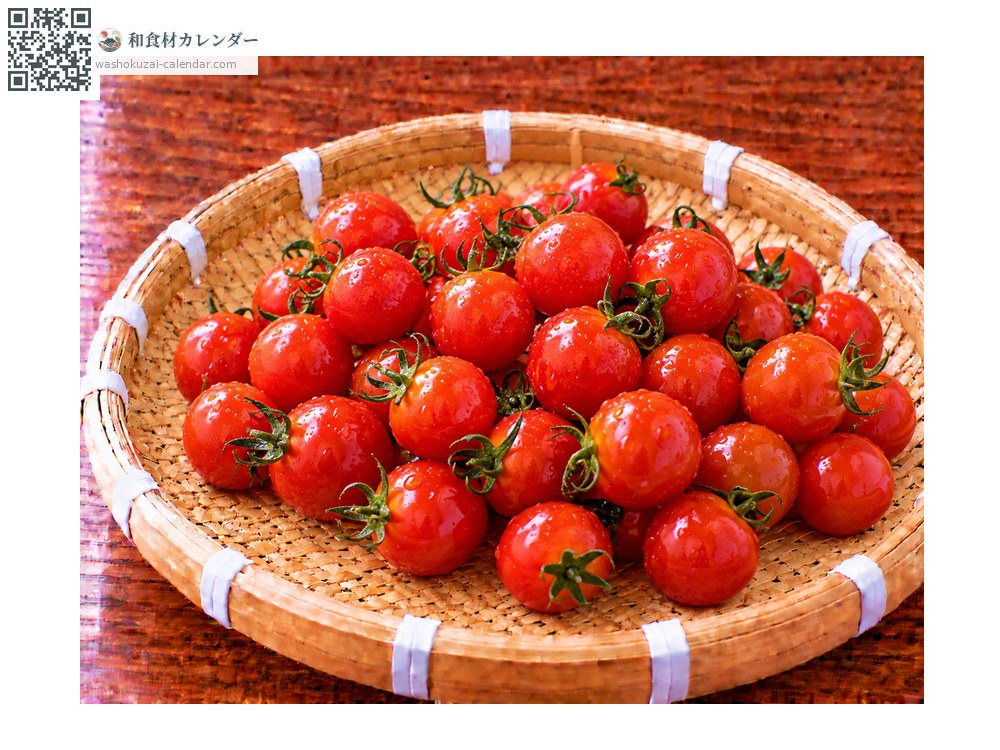
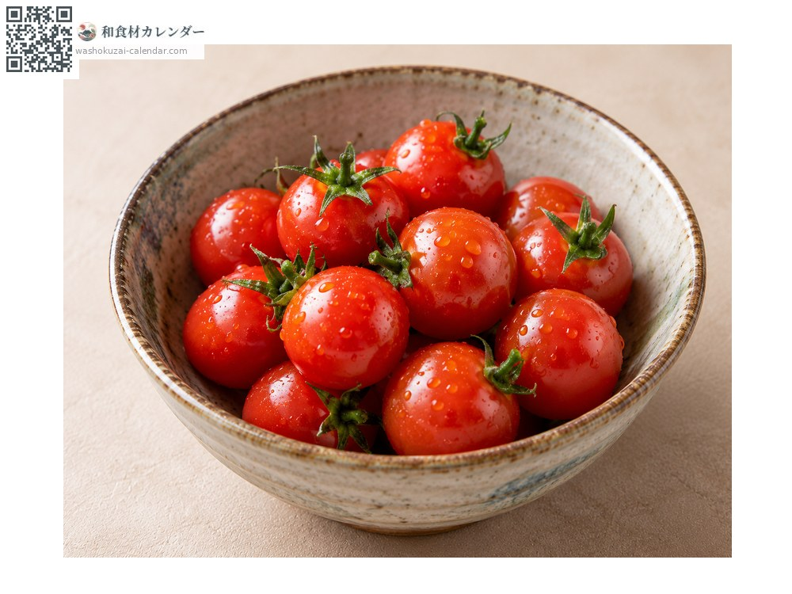
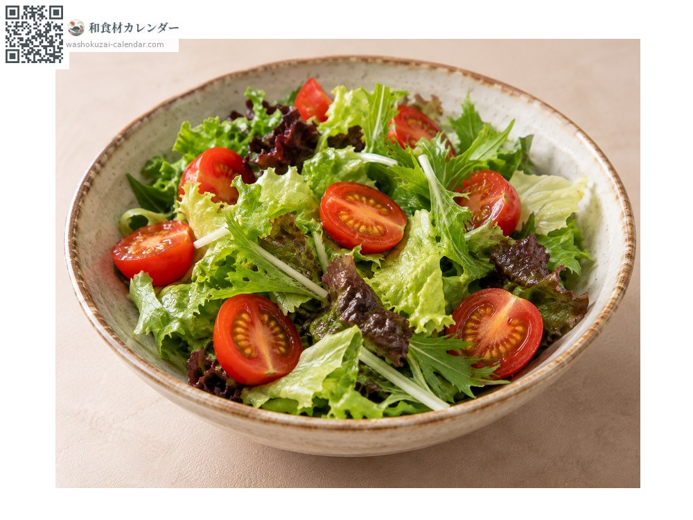
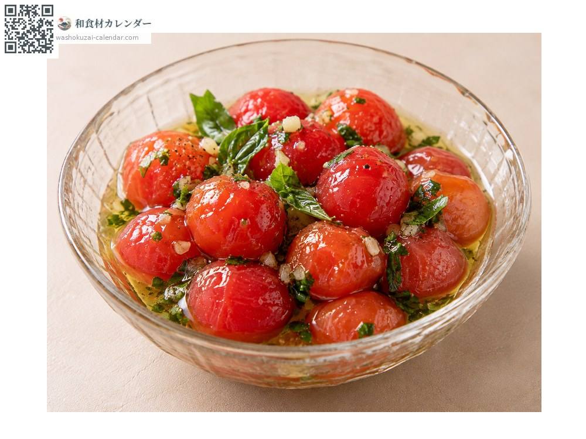
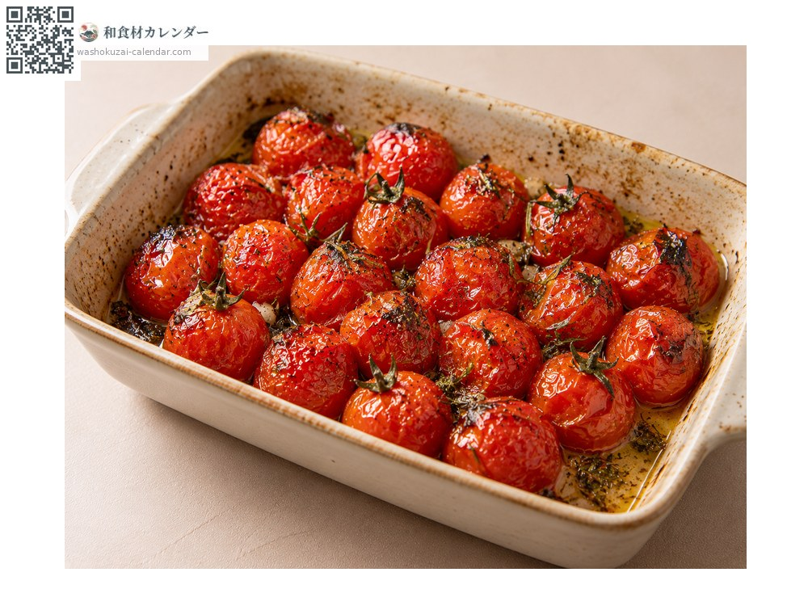

蔬菜
小番茄
ミニトマト みにとまと
应季时期为5月、6月、7月

应季时期
1月
2月
3月
4月
5月
6月
7月
8月
9月
10月
11月
12月
应季有供应
烹饪方法

直接生食
洗过直接吃，放便当或当配菜。

沙拉
对半切开加入，增添色彩与甜味。

腌渍
焯水去皮后浸渍，比较容易入味。

烘烤
用烤箱烘烤，甜味会更浓缩。
挑选方法
颜色深而均匀、蒂头青绿有张力。表皮没有裂痕。
保存方法
常温追熟后再冷藏。冰得太冷味道会下降。
主要产地
小知识
糖度比大颗番茄高，营养也更浓缩。有Aiko、Carol等众多品种，颜色除了红色还有黄、橙、绿、近黑等。整串出货的比较能保持新鲜。